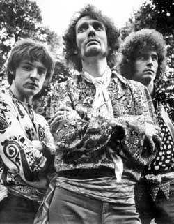
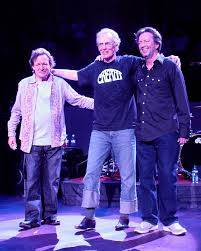

|  |
|
 |
In 1966 Eric Clapton had already made a name for himself in the English music scene with well regarded stints in The Yardbirds and his then current band John Mayall & the Bluesbreakers. He was beginning to feel somewhat stifled musically in that setting though. Ginger Baker, the drummer for the Graham Bond Organisation, another well known English band, was also interested in starting a new band and in the summer of that year Clapton approached him with the idea of forming a trio with Jack Bruce on bass guitar. Clapton had been very impressed with Bruce and his approach to music when working with him in the previous year. Baker also knew Bruce but in an entirely differently light. Baker and Bruce had previously worked together in the Graham Bond Organisation and their relationship was marked with frequent arguments, leading in some accounts to Baker once threatening Bruce with a knife. Clapton managed to convince them to work them together again though and in July of 1966 they played their first gig as The Cream (soon shortened to Cream), a reference to the fact that many considered them to be the cream of the crop in the rapidly expanding English music business.
The band released their first album Fresh Cream later in 1966 which included both blues covers like "Rollin' and Tumblin", "Spoonful" and others as well as some more innovative original songs mainly written by Bruce. The album was moderately successful in the UK reaching 6 in the charts but much less so in the US and their first American tour was likewise underwhelming. In the spring of 1967 they returned to New York to record their second album as their American record label ATCO (a subsidiary of Atlantic Records) felt that the results of their English studio sessions were not sufficient to attract a large American audience. The results of those sessions produced Disraeli Gears, one of the seminal albums of Hard Rock. Later in 1967 they began their first headline tour of the US, both acquiring a large fan base and completing the development of their "rock jam" concert style where a concert included relatively few unique songs, but with each song becoming a framework for extended musical improvisation often lasting 10-20 minutes or more. As much success as the band was having though, the internal tensions were taking their toll. Bruce and Baker's relationship continued to deteriorate and Clapton's increasing individual stardom as well as his personal desire to expand his musical horizons had him ready to move on. By the time Cream's third album Wheels of Fire was released in the late summer of 1968, the group had already announced they would be disbanding. During October and November of 1968 they played a farewell tour of the US and UK with their final performance at the Royal Albert Hall on November 26. However the band was convinced to make one final album and both live cuts and studio sessions recorded during their farewell tour were released as the Goodbye album in early 1969.
After disbanding, all three members continued respected musical careers, although Eric Clapton was the only one who went on to great commercial success including founding the popular groups Blind Faith and Derek and the Dominos as well as having a long solo career. But as a band that only legitimately existed for less than 3 years, Cream established a new style of Hard Rock music and greatly influenced many of the groups that followed them: Led Zeppelin, Mountain, Rush and countless others. Much of their song catalog has stood the test of time and continues to be enjoyed by many. And thanks to Eric Clapton's continuing presence as one of the rock music industry's guitar greats, many of Cream's trademark songs like "Sunshine of Your Love", "White Room" and "Badge" still enjoy a fair amount of airplay on classic rock radio stations. Cream was inducted into the Rock and Roll Hall of Fame in 1993 and in May of 2005 reunited to play 4 shows at the Royal Albert Hall in London which all sold out in less than an hour. The reception at those shows was so positive that they again reunited to play 2 sold out shows at Madison Square Garden in October of that year. No further performances ever occurred and Jack Bruce died in 2014, making another reunion impossible.
The following three videos show Cream performing their signature song "Sunshine of Your Love" through the years.
Revolution Club, London 1967 |
Farewell Concert, Royal Albert Hall Nov 1968 |
Reunion Concert, Royal Albert Hall May 2005 |
|---|---|---|
|
This was Cream at the height of their powers. Disraeli Gears had just been released and they had just completed a successful tour of America as headliners. |
This was the last Cream concert before they disbanded. Besides the members not particularly paying much attention to one another, the tempo is much faster than in the first video, as if they are just trying to be done with it all as soon as possible. |
Although they played a few songs at their induction into the Rock and Roll Hall of Fame in 1993, this is the first time they had played a concert as a band in almost 40 years. They all seem to be enjoying it and most of their later comments indicated that they were indeed having a good time. This was not the case when they reunited again in New York later that year where evidently all of the old problems surfaced again. |